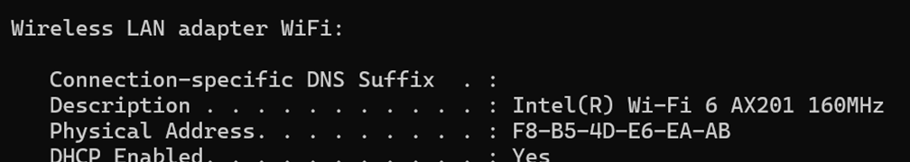
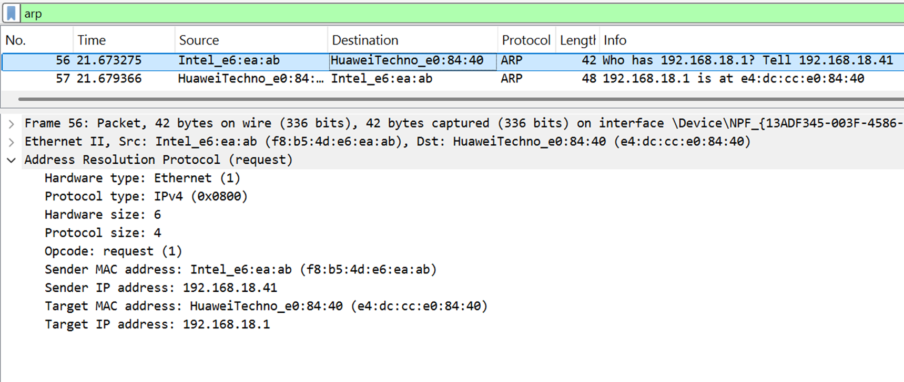
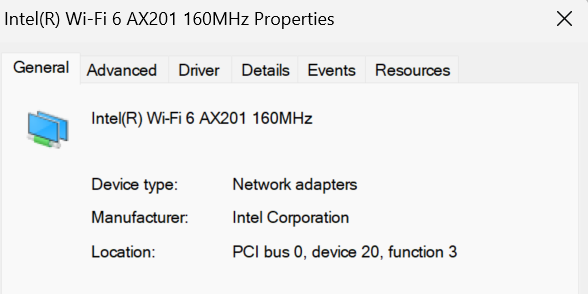
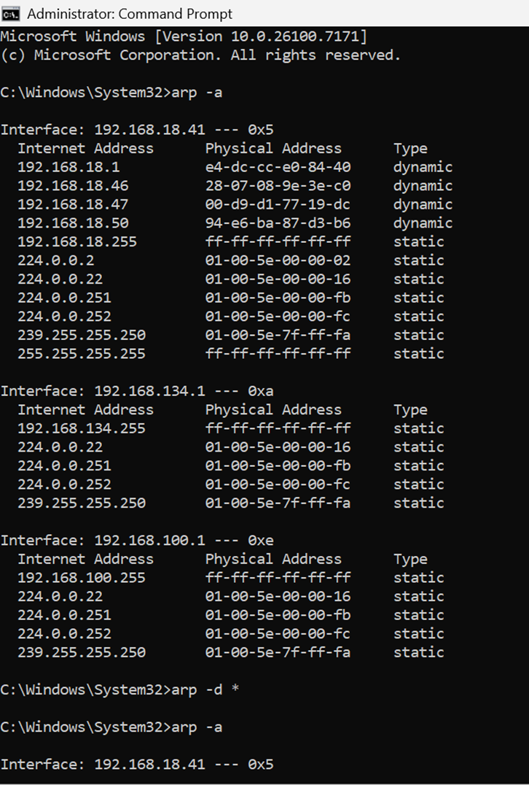
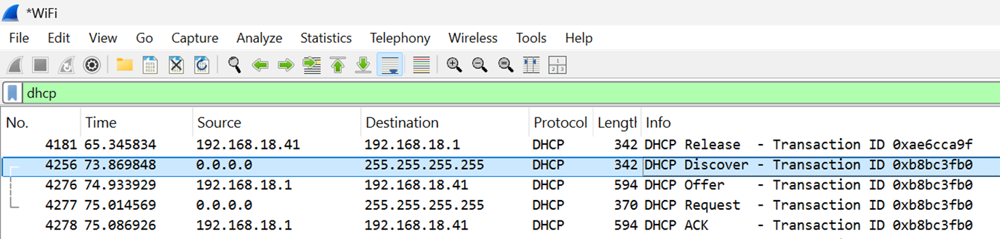
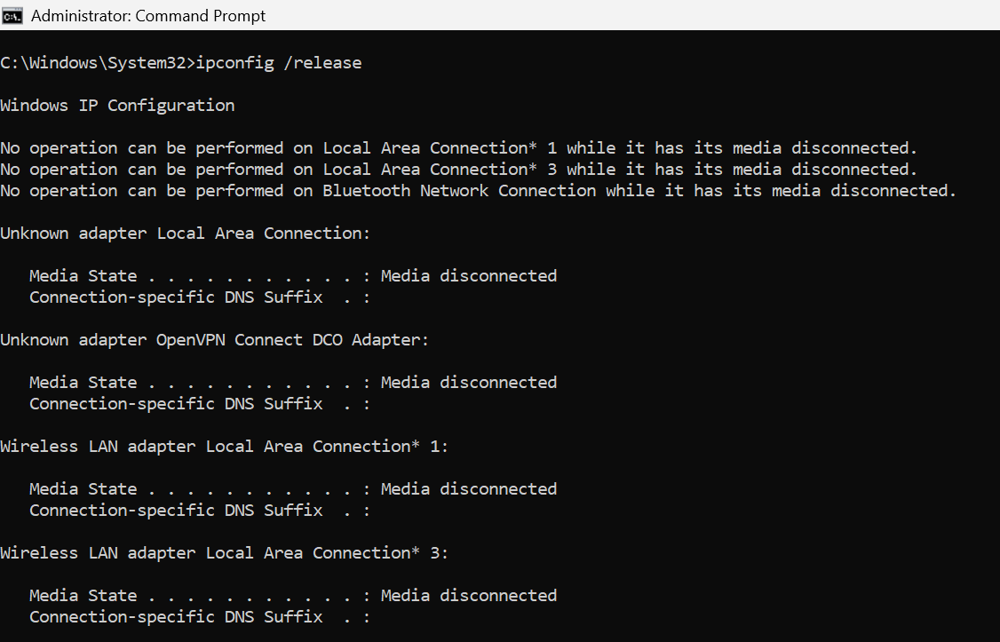
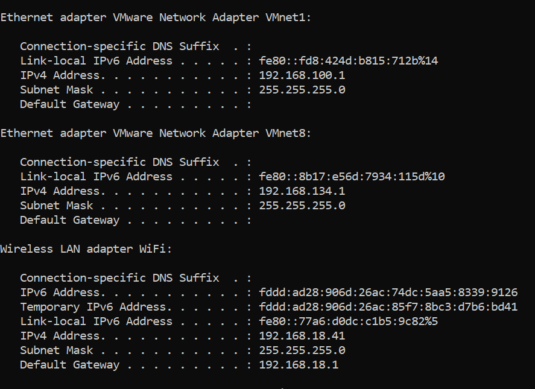
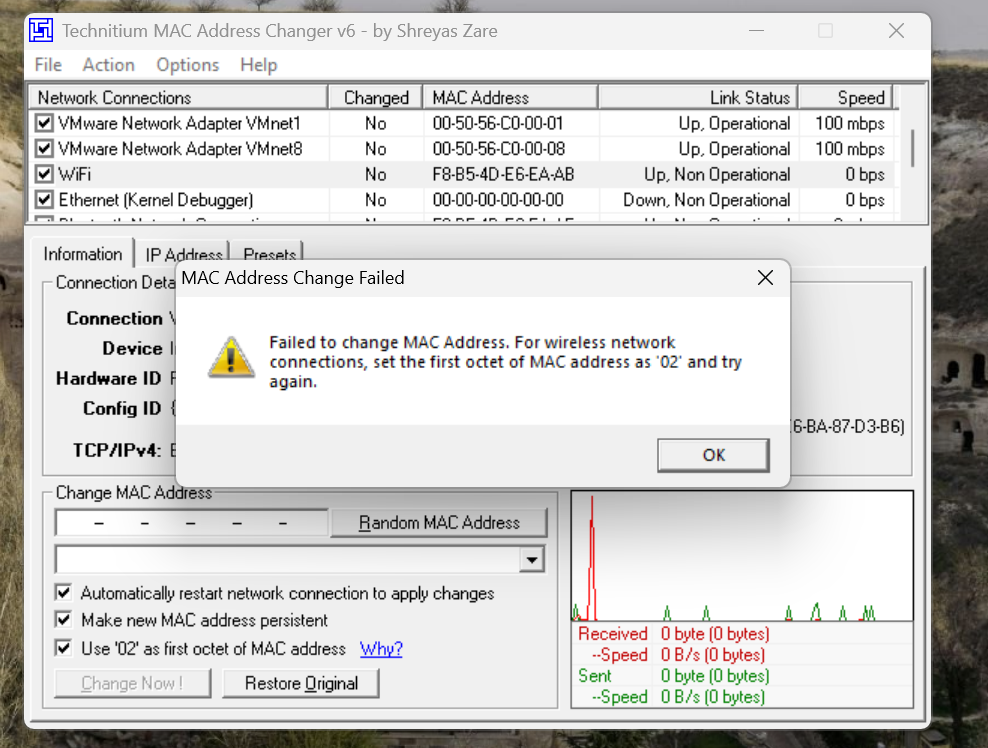
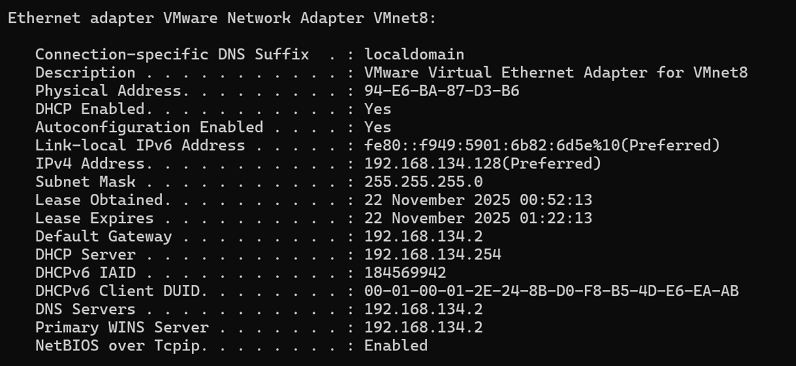

Part 1: Theoretical Concepts
1.1 Ethernet Standards & Frame Structure
Ethernet is the standard communication protocol embedded in software and hardware devices, used for building a local area network (LAN). It operates primarily at the Physical and Data Link layers of the OSI model.
Physical Layer Standards
Common Ethernet standards define the cabling and speed specifications:
|
Standard |
Speed |
Cable Type |
Max Distance |
|
10BASE-T |
10 Mbps |
Cat 3 UTP |
100 meters |
|
100BASE-TX |
100 Mbps |
Cat 5 UTP |
100 meters |
|
1000BASE-T |
1 Gbps |
Cat 5e/6 UTP |
100 meters |
Ethernet Limits
● Distance: Copper cabling (UTP) is generally limited to 100 meters (328 feet) to prevent signal attenuation. Fiber optic runs can go much further.
● MTU (Maximum Transmission Unit): The standard maximum payload size is 1500 bytes.
● Minimum Size: The minimum frame size is 64 bytes (46 bytes of data + 18 bytes of header/trailer). If data is smaller, padding is added.
Ethernet Frame
The Ethernet frame is the data packet unit transferred over the wire.
Structure:
1. Preamble & SFD (8 Bytes): Synchronization pattern to alert receivers a frame is coming.
2. Destination MAC (6 Bytes): Physical address of the receiver.
3. Source MAC (6 Bytes): Physical address of the sender.
4. Type/Length (2 Bytes): Indicates the protocol carried in the payload (e.g., IPv4).
5. Data/Payload (461500 Bytes): The actual data being transported.
6. FCS (4 Bytes): Frame Check Sequence used for error detection (CRC).
1.2 MAC Address & Broadcasting
MAC Address (Media Access Control)
A MAC address is a unique, 48-bit hardware identifier assigned to network interfaces for communications at the Data Link Layer (Layer 2).
● Format: Hexadecimal (e.g., 00:1A:2B:3C:4D:5E).
● Composition: The first 24 bits are the OUI (Organizationally Unique Identifier) assigned to the manufacturer. The last 24 bits are assigned by the vendor to the specific card.
Broadcasting
Broadcasting is a method of sending a message to all recipients on the network segment simultaneously.
● Broadcast MAC Address: FF:FF:FF:FF:FF:FF
● Usage: Used by protocols like ARP (to find an owner of an IP) and DHCP (to find a server).
1.3 Hub vs. Switch vs. Router
These devices connect network nodes but operate at different layers and with different intelligence.
1. Hub (Layer 1 - Physical)
● Operation: A "dumb" repeater. When it receives bits on one port, it blindly copies them to all other ports.
● Performance: High congestion. All devices share the same bandwidth.
● Collision Domain: Single shared collision domain (only one device can talk at a time).
2. Switch (Layer 2 - Data Link)
● Operation: Intelligent device. It learns MAC addresses and stores them in a MAC Table. It forwards frames only to the specific port where the destination MAC resides.
● Performance: Full bandwidth per port.
● Collision Domain: Breaks collision domains (each port is its own domain).
3. Router (Layer 3 - Network)
● Operation: Routes data packets between different networks (e.g., LAN to WAN/Internet) based on IP addresses.
● Broadcast Domain: Routers stop broadcasts. Each interface creates a separate broadcast domain.
1.4 CSMA/CD & Duplex Modes
CSMA/CD (Carrier Sense Multiple Access with Collision Detection)
This is the access control protocol used in early Ethernet (half-duplex) to manage traffic on a shared wire.
1. Carrier Sense: Listen to the wire. Is anyone talking?
2. Multiple Access: If silent, start transmitting.
3. Collision Detection: If another device transmits at the same time, a voltage spike (collision) occurs.
4. Recovery: Both devices stop, send a "jam signal," wait a random amount of time (backoff), and retry.
Half vs. Full Duplex
● Half-Duplex: Data flows in both directions, but only one way at a time (like a walkie-talkie). This is used by Hubs and requires CSMA/CD.
● Full-Duplex: Data flows in both directions simultaneously (like a telephone). This is used by modern Switches. It uses separate wire pairs for transmitting and receiving, eliminating collisions entirely.
1.5 ARP & Detecting Doubled IP Addresses
ARP (Address Resolution Protocol)
ARP is used to map a known Layer 3 address (IP Address) to an unknown Layer 2 address (MAC Address).
● Request: "Who has IP 192.168.1.5?" (Sent as a Broadcast).
● Reply: "I have 192.168.1.5, my MAC is AA:BB:CC..." (Sent as Unicast).
Detecting Doubled (Duplicate) IP Addresses
Operating systems use Gratuitous ARP (GARP) to detect conflicts.
● Mechanism: When a device boots up or links up, it sends an ARP Request asking for its own IP address.
● Result: If it receives a reply, it means another device on the network is already using that IP. The OS will disable the interface and alert the user of an "IP Address Conflict."
1.6 BOOTP & DHCP
BOOTP (Bootstrap Protocol)
An older, static protocol used to assign IPs to diskless workstations.
● Limitation: It requires an administrator to manually create a static map of MAC addresses to IP addresses on the server. It does not support temporary leases or automatic reclamation of unused IPs.
DHCP (Dynamic Host Configuration Protocol)
The modern successor to BOOTP. It dynamically assigns IP addresses, Subnet Masks, Gateways, and DNS servers from a pool.
The DORA Process:
1. Discover: Client broadcasts to find a DHCP server.
2. Offer: Server offers an available IP address.
3. Request: Client asks to lease that specific IP.
4. Acknowledge: Server confirms the lease and sends configuration details.
1.7 VLANs (Virtual LANs)
A VLAN allows a network administrator to segment a physical switch into multiple logical networks.
Key Concepts
● Segmentation: Separates traffic (e.g., Guest Wi-Fi vs. Corporate Data). Devices in VLAN 10 cannot communicate with VLAN 20 without a router.
● Broadcast Control: Reduces network congestion by limiting broadcast traffic to a specific VLAN.
● Security: Sensitive groups (like HR or Finance) can be isolated.
802.1Q Tagging
To carry traffic for multiple VLANs across a single cable (a Trunk link between switches), the frames must be "tagged."
● The 802.1Q protocol inserts a 4-byte tag into the Ethernet header.
● This tag contains the VLAN ID (VID), identifying which VLAN the frame belongs to.
Task 2.1: MAC Address and Default Gateway
Objective: Identify the physical address of the local machine and the Default Gateway.
Procedure & Analysis: To determine the local MAC address, I used the ipconfig /all command (Screenshot 1).
- My Physical Address: F8-B5-4D-E6-EA-AB
To find the MAC address of the Default Gateway (192.168.18.1), I used Wireshark to capture the ARP resolution process.
- Screenshot 2 Analysis: As seen in Packet 57, the Gateway sent an ARP Reply explicitly stating: "192.168.18.1 is at e4:dc:cc:e0:84:40".
- Gateway MAC: e4:dc:cc:e0:84:40 (Huawei Technologies).

Screenshot 1

Screenshot 2
Task 2.2: Network Adapter Producer
Objective: Identify the manufacturer of the network interface cards.
Analysis: Using Wireshark's OUI (Organizationally Unique Identifier) resolution feature, the first 3 bytes of the MAC address were used to identify the vendor.
- My Adapter: The OUI F8-B5-4D resolves to Intel Corporate.
- Gateway Adapter: The OUI E4-DC-CC resolves to Huawei Technologies.
(This is verified in the Ethernet II header shown in Task 2.1).
This OUI result was directly confirmed by checking the adapter's properties in Device Manager (Screenshot 3)

Screenshot 3
Task 2.3: Flushing the ARP Cache
Objective: Clear the ARP table and observe the behavior of the operating system.
Procedure:
1. I displayed the current cache using arp -a.
2. I executed the flush command: arp -d * (Run as Administrator).
3. I immediately checked the table again.
Observation: Initially, the ARP table contained multiple dynamic entries (e.g., 192.168.18.46). After the flush command, the cache was cleared. However, the entry for the Default Gateway (192.168.18.1) reappeared almost instantly.
Explanation: This immediate reappearance is expected behavior. Modern operating systems maintain active background network connections. Even after a flush, the OS immediately sends a new ARP Request to the Gateway to maintain connectivity, repopulating that specific entry while leaving inactive hosts cleared.

Screenshot 4

Screenshot 5
Task 2.4: IP Address Conflict Detection
Objective: Detect an IP conflict using ARP requests.
Procedure: I identified an active host on the network (192.168.18.50, a Samsung device). I then manually configured my network adapter to use this same static IP address to force a conflict.

Screenshot 6
Wireshark Analysis:
1. ARP Probe: My computer sent an ARP request asking "Who has 192.168.18.50?" to check if the IP was free.
2. Conflict Detected: The existing host (SamsungElect_87:d3:b6) replied, claiming ownership of the IP.
3. Result: Windows detected the duplicate MAC address response and rejected the static configuration to prevent network instability.
Screenshot 7
Task 2.5: DHCP Protocol Analysis (DORA)
Objective: Capture and analyze the packets required to obtain an IP address.
Procedure: I utilized Wireshark to capture the DHCP handshake process known as DORA (Discover, Offer, Request, Acknowledge).
Packet Breakdown:
1. DHCP Discover: Source 0.0.0.0. The client broadcasts a request to locate a DHCP server.
2. DHCP Offer: Source 192.168.18.1. The router offers the IP 192.168.18.41.
3. DHCP Request: Source 0.0.0.0. The client explicitly requests to lease the offered IP.
4. DHCP ACK: Source 192.168.18.1. The server acknowledges the request and finalizes the lease.

Screenshot 8
Task 2.6: Release and Renew IP Address
Objective: Manually trigger the DHCP process via the command line.
Procedure:
- Step 1 (Release): I executed ipconfig /release. The screenshot confirms the "Media disconnected" state, indicating the IP configuration was dropped. (Screenshot 9)
- Step 2 (Renew): I executed ipconfig /renew. This triggered the DORA process analyzed in Task 2.5. The command output confirms the adapter successfully regained its IP address (192.168.18.41) and Gateway connection. (Screenshot 10)

Screenshot 9

Screenshot 10
Task 2.7: MAC Address Spoofing
Objective: Change the MAC address of a host to mimic another device on the network.
Challenge & Solution: I attempted to spoof the MAC address of the target Samsung device (94-E6-BA-87-D3-B6) on my physical Intel Wi-Fi adapter. However, the operation failed because the Intel network driver enforces a security restriction: it only accepts "Locally Administered" addresses (starting with 02, 06, 0A, or 0E).
Resolution: To demonstrate the spoofing capability, I performed the cloning on the VMware Virtual Ethernet Adapter (VMnet8) instead, using the Technitium MAC Address Changer.
Result:
- Screenshot 11: Shows the hardware error on the physical Intel adapter.
- Screenshot 12: Proves the Virtual Adapter successfully accepted the target MAC (94-E6-BA-87-D3-B6) and subsequently obtained a valid IP address (192.168.134.128) from the network, verifying the spoof was successful.

Screenshot 11

Screenshot 12